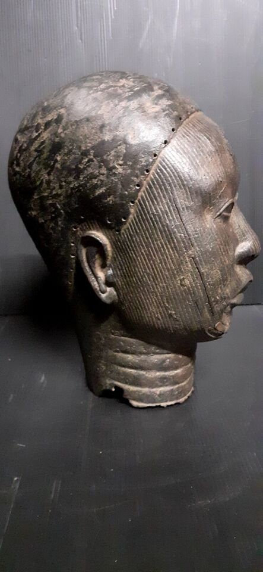
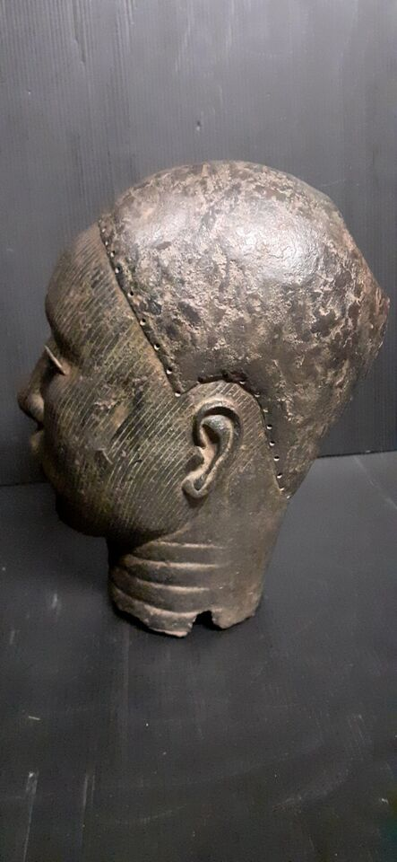
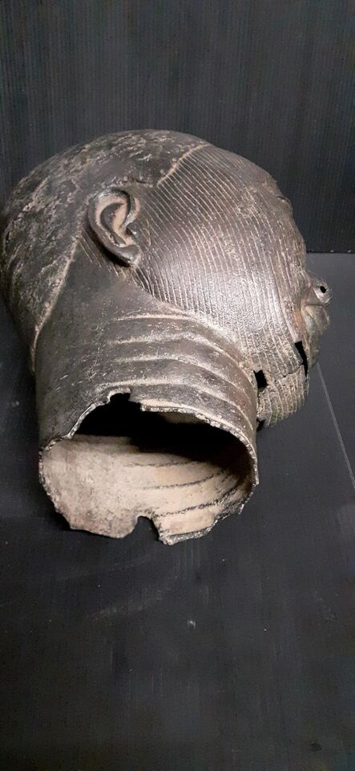
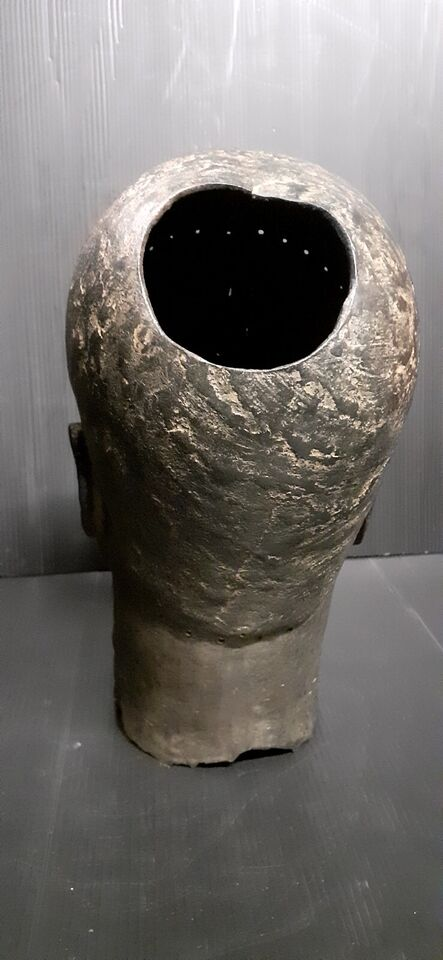
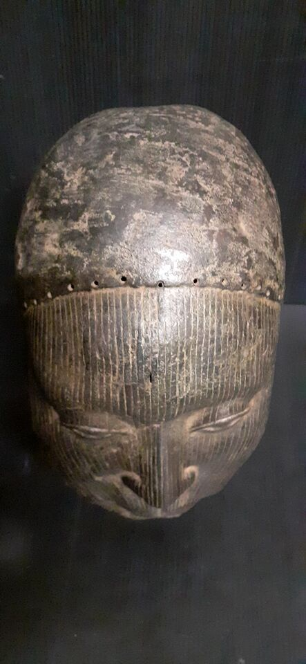

Historique de tête Ifé
Prix : 2600 €






Nom: Tête Ifé
Hauteur: 40 cm
Ethnie: Bini/Edo
Pays d'origine: Nigeria
Zone de collecte: Abuja
Matière: Bronze
Prix: 2600 €
L'art d'Ifé est le seul en Afrique à proposer des représentations anthropomorphes d'un tel réalisme. Il est d'une si haute qualité artistique qu'on l'a souvent comparé aux autres grandes cultures naturalistes de la Grèce et de la Rome antiques. La tradition rapporte qu'à Bénin on avait jadis coutume de décapiter les rois vaincus et d'en offrir la tête à l'Oba qui la transmettait aux artisans bronziers. On ne coulait que la représentation des têtes de ceux qui avaient offert la plus vive résistance. Lorsque le fils d'un souverain vaincu montait sur le trône, l'Oba lui envoyait une réplique en bronze de la tête de son père en guise d'avertissement. La scarification sur le front serait considérée comme la marque d'un étranger. Les colliers de perles de corail revêtaient une importance primordiale comme symboles de souveraineté. Ils étaient réservées à l'Oba, la reine-mère et les hauts dignitaires.
La tête Oba est un élément emblématique de la culture béninoise, issue du royaume d'Ifè, au Nigéria. Elle incarne une tradition artistique et spirituelle profondément enracinée dans l’histoire de l’Afrique de l’Ouest. Ces sculptures, généralement réalisées en laiton ou en bronze, sont des représentations symboliques des rois, appelés Oba, qui ont régné dans cette région. Leur usage dépasse la simple dimension esthétique : elles sont des objets de culte et des supports de mémoire collective. Les têtes Oba servent principalement lors de cérémonies rituelles pour honorer les ancêtres royaux. Elles jouent un rôle central dans la préservation des traditions, en représentant la continuité dynastique et en renforçant le lien entre les générations passées et présentes. Ces œuvres sont souvent placées sur des autels dédiés aux ancêtres, accompagnées d’offrandes destinées à invoquer leur protection et leur bénédiction sur la communauté. La confection d'une tête Oba est également un acte hautement symbolique. Chaque détail de ces sculptures, qu’il s’agisse des motifs ornant le visage, des coiffes élaborées ou des colliers imposants, véhicule des messages spécifiques liés à l’autorité, la sagesse et la spiritualité. La maîtrise technique des artisans, transmise de génération en génération, reflète l’excellence artistique et l’ingéniosité culturelle de cette civilisation. Aujourd’hui, les têtes Oba sont également des objets d’étude et d’admiration dans le monde entier. Elles témoignent de l’histoire et de la richesse culturelle du royaume de Bénin, tout en suscitant des débats sur leur restitution, car de nombreuses pièces ont été déplacées hors d’Afrique au cours de la période coloniale. Leur préservation et leur valorisation continuent d’être des enjeux majeurs, symbolisant à la fois l’héritage culturel africain et l’identité collective de ses descendants.